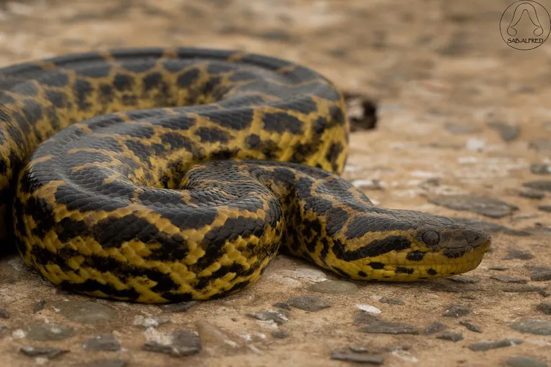

爬行动物 · 动物界
黄水蚺 Eunectes notaeus

南美洲潘塔纳尔湿地的水栖蚺类，体色黄褐带黑斑，体型小于绿水蚺，主要捕食鱼类、水鸟和小型哺乳动物。
- 分类
- 门脊索动物门纲爬行纲目有鳞目科蚺科属水蚺属
- 栖息环境
- 南美潘塔纳尔湿地、沼泽、河流与湖泊
- 地理分布
- 南美洲巴拉那河流域及潘塔纳尔湿地
- 保护级别
- IUCN 无危（LC）；CITES 附录 II；非中国原产
物种志
黄水蚺体长 2.5–4 米，体重 25–40 千克，体型比绿水蚺小。它身体粗壮，头部与颈部区分不明显，眼睛和鼻孔位于头顶；体色以黄褐、橄榄黄为底，背部布满黑褐色的大斑块，体侧有黑色小点，腹部淡黄。
它分布于南美洲的巴拉那河流域和潘塔纳尔湿地，栖息于沼泽、河流、湖泊和湿地，终生水栖，多在夜间活动，捕食鱼类、水鸟、水豚幼崽和小型哺乳动物，靠绞杀使猎物窒息。它是卵胎生蛇类，雌蚺妊娠约 6 个月后产下 20–40 条幼蚺。黄水蚺无毒，性情相对温和，遇到人类多会逃走；目前野外种群较稳定，被列为无危物种，主要威胁来自湿地开发和皮革贸易。
形态与习性
- 食性鱼类、水鸟、水豚幼崽和小型哺乳动物
- 体长2.5–4 m
- 体重约 25–40 kg
- 寿命约 10–20 年
- 繁殖卵胎生，妊娠约 6 个月，每胎 20–40 条
- 活动节律夜行性，终生水栖
趣味知识
- 黄水蚺身上黄黑相间的斑纹，是它在湿地水草中的保护色。
- 它生活在潘塔纳尔湿地，每年旱季水位下降时活动范围会缩小。
- 黄水蚺是卵胎生蛇类，一次可产下数十条幼蚺。